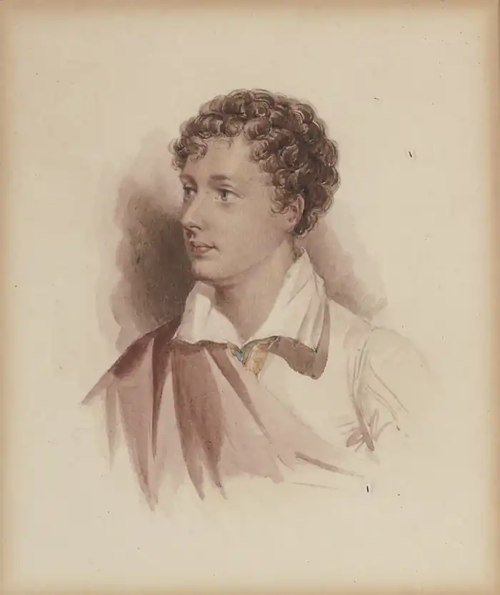

ДЖОРДЖ НОЕЛ ГОРДОН БАЙРОН
(1788— 1824)
Байрон народився 22 січня 1788 року в Лондоні у знатній, але зовсім збіднілій аристократичній родині. Англійський поет належав до давнього англійського роду, а по лінії матері, уродженої Гордон, був прямим нащадком короля Шотландії Якова І. Його батько, який вів безпутне життя (прізвисько "Mad Jack"), протринькав залишки свого майна та посаг дружини, втік до Франції, рятуючись від кредиторів, де й вмер, коли Байронові було три роки. Мати, майже позбавлена засобів до існування, відвезла сина на свою батьківщину в Абердин. У 1798 році по смерті двоюрідного діда Байрон успадкував титул лорда й родовий маєток — Ньюстедське абатство. У 1801 році Байрон вступив до аристократичної школи Хароу; у 1805 році — до Кембриджського університету. У грудні 1806 року Байрон видав першу збірку віршів ("Fugitive Pieces"), які, за порадою друга, який вважав окремі вірші надто чуттєвими, вилучив з продажу і знищив. Незабаром у світ вийшло друге видання цієї збірки. Обидва видання з'явилися без посилання на авторство. Уперше своє ім'я Байрон поставив на збірці "Години дозвілля", яка побачила світ у червні 1807 року. У січні 1808 року на сторінках впливового "Единбурзького огляду" була надрукована рецензія. Критик, ознайомившись із віршами, вказав на те, що вони: незрілі й наслідувальні. Байрон зробив першу й свою найбільш невдалу спробу створити за прикладом інших романтиків образ-маску: юнака-поета, поета-аристократа. Образ був сконструйований з використанням новітніх романтичних мотивів: у прихильності до родового замку ("Прощання з Ньюстедом") було щось від вальтер-скоттівського середньовіччя; у пристрасті до спогадів — від властивої Вордсворту мрійливої самозаглибленості; в анакреонтичних любовних віршах, героїні яких ховаються за вигаданими іменами Еми, Кароліни, угадувався вплив Т. Мура. Однак за межами збірника залишилося те краще, що вже було написано й що саме тоді писав Байрон. Наприклад, вірші, звернені до Мері Чаворт: "Уривок, написаний невдовзі після заміжжя міс Чаворт", "Спогад",— свідчення юнацької любові поета, що назавжди залишилися в його віршах як перше й найщиріше почуття. Визнання, несподіване у вустах поета-романтика, але виправдане Байроном, який віддавав перевагу романтичній біографії над романтичною фантазією. Інші уявляли екзотичні дива Сходу, а Байрон здійснив туди подорож та оцінив все пильним поглядом політика. Інші бунтували в уяві, а він спочатку у своїх парламентських виступах і віршах підтримав руйнівників верстатів — лудитів, повсталу Ірландію, а пізніше сам взяв участь у змові італійських карбонаріїв і в грецькому повстанні. Він бачив себе передусім політиком, діячем суспільним, а вже потім — поетом, хоча поезія була його найзначнішим суспільним діянням. Звідси ж і скептичне ставлення до романтизму в цілому. Байрон не прийняв сучасного романтизму, хоча більшість його виступів проти Вордсворта, Саути, Мура, В. Скотта мали особистий характер. Скандал, що вибухнув, не застав Байрона в Англії. У червні 1809 року він відбув у дворічну подорож по Середземномор'ю. У липні 1811 року Байрон повертається до Англії й визнає, що сатира його була занадто різкою, і вибачається. Але далеко не все в ній можна пояснити хвилинним роздратуванням. У ній є оцінки, від яких Байрон не відмовиться. Він не приймає, по суті, головного — ролі поета, якою вона уявлялася романтикам. Для нього поет не маг, не баладник, не самотній мрійник, а оратор, суспільна особистість. Це він підтвердить і іншим своїм маніфестом, що його він привіз зі східної подорожі,— поемою "З Горація". Байрон надавав йому великої ваги, але розчарував своїх друзів, які сподівалися отримати від нього щось інше. їхнім очікуванням більше відповідали дві перші пісні нової поеми "Паломництво Чайльд-Гарольда", робота над якими почалася ще восени 1809 року, в Албанії, де поет вперше усвідомив необхідність закріпити в поетичній формі свої враження від подорожі. Третя і четверта пісні будуть пов'язані з іншою подорожжю Байрона — з його мандрівним життям після того, як 25 квітня 1816 року він буде змушений назавжди покинути Англію. Це було викликано остаточним розривом з англійським світським суспільством після того, як його залишила дружина Анабела Мільбенк одразу ж після народження дочки Ади. Лондонський період (1812-1816) — час романтичної слави, роки успіху, що виявилися для поета важким іспитом. Залишитися собою, жити своїм життям повною мірою йому не вдавалося. У 1812-1813 роках Байрон здійснив важливі виступи в палаті лордів, однак йому швидко "набридла парламентська комедія. Я виступив там три рази, але не думаю, що з мене вийде оратор" ("Щоденник", 14 листопада 1813 року). Було написано ним кілька гострих політичних віршів — відгук на те, що відбувається, але в цілому поезія тих років справляла враження, що невдоволеність власним життям лондонського денді змушувала його люто кидати героя на зіткнення зі світом, на бунт проти нього. Саме в ці роки Байрон створює цикл так званих східних поем, що розробляють уже знайдений у "Чайльд-Гарольді" новий жанр лисичанської поеми, що складно вибудовує відносини між автором і героєм. У новому циклі автор трохи відступає в тінь і з більшою чи меншою послідовністю розповідає історію свого героя. Історію, у якій майже завжди є центральним любовний епізод. Поеми утвердили за Байроном славу відчайдушного самотнього, романтика, їх відразу ж перекладали іншими мовами, у тому числі й російською: "Гяур" (1813), "Абідоська наречена" (1813), "Корсар" (1814), "Лара" (1826), "Облога Коринфа" (1816), "Паризіна" (1816). У героях східних поем читачі впізнавали самого Байрона. Створювалися цікаві легенди, згідно з якими все, що відбувалося з героями, траплялося і з автором. Герой Байрона ввібрав у себе різноманітні романтичні риси, ніби розчинившись в біографії й образі самого поета. Тиражування цього героя, масове наслідування його в житті й у літературі створили течію "байронізм". Складність, з якою розрізняли автора й героя, проявлялася в незвичності самої форми — лисичанської поеми, яку створив Байрон. Однак новизна форми була наслідком нової особистості, що безпосередньо позначилася й на ліричних циклах лондонського періоду. Він починається шістьма віршами, об'єднаними під умовно-грецьким жіночим ім'ям "До Тирзи" і присвяченого померлій жінці. У ній іноді намагаються вгадати якесь конкретне обличчя, "безіменну" чи "приховану" любов, але біографічний привід має більш широкий зміст, передає атмосферу й обставини особистого життя Байрона після його повернення до Англії. Першого серпня 1811 року помирає мати поета, з якою його пов'язували стосунки важкі, але близькі. Потім протягом двох місяців він одержує звістки про смерть кількох друзів з Хароу і Кембриджа. Цикл "До Тирзи" — один з перших для Байрона у поемах і драмах образів приреченої любові, що гине. Другим важливим ліричним циклом тих років була низка віршів, об'єднаних особистістю Наполеона. Спочатку в зв'язку з його зреченням 6 квітня 1814 року за один день пишеться велика "Ода Наполеону Бонапартові". Роком пізніше він пише також такі твори: "На втечу Напалеона з острова Ельби", "Ода з французького", "Зірка Почесного легіону", "Прощання Наполеона". Ліричним завершенням цього періоду життя Байрона були вірші, звернені до зведеної сестри Августи Лі: "Станси до Августи", "Послання до Августи",— однієї з небагатьох, хто не покинув поета. Вірші були написані вже у Швейцарії, куди Байрон спочатку вирушив після розриву з дружиною. Місяці — з травня по жовтень 1816 року,— проведені там, були душевно важким часом для Байрона й водночас творчо плідним. Відразу ж з'являється збірник, що об'єднав вірші й нову поему,— "Шильйонський в'язень". У ті ж місяці написані невеликі ліричні поеми: "Пітьма" і "Сон", що доводять морок і безвихідність романтичної свідомості до апокаліптичного бачення загальної загибелі. Він також пише філософську драму "Манфред", що її розпочав у Швейцарії і, яка чимось подібна до "Фауста" Ґете, хоча, разом з тим, і полемізує з цим твором. Місяці, що їх Байрон провів 1816 року у Швейцарії, не були для поета самотніми. На цей час випадає його зустріч і спільне проживання на віллі Діодаті з П. Б. Шеллі. Там у Байрона виникає роман з його своячкою Клер Клермонт. У січні народжується дочка Алегра (померла в 1822 році). У листопаді 1816 року Байрон переїздить до Італії, де спочатку зупиняється у Венеції. Потім, після зустрічі з Терезою Гвічіолі, живе з нею в Равені (грудень 1819р.). Переслідуваний за свої зв'язки з карбонаріями поліцією, Байрон у жовтні 1821 року їде до Пізи, а через рік поселяється в Генуї. Якщо друга пісня "Паломництва Чайльд-Гарольда" була сповнена спогадів про велике минуле Греції, то четверта, остання пісня, присвячена минулому Давнього Риму та Італії.. Італійські враження загострюють історичне почуття Байрона. У цей час він пище невеликі поеми "Скарга Тасо" і "Пророцтво Данте"( 1819). У 1818 році була створена історична поема "Мазепа". Після переїзду до Равени в будинку графа Гвічіолі, втягнутий карбонаріями в безпосередні дії, Байрон починає цикл історичних трагедій: "Марино Фал'єро" (1820), "Сарданапал" (1821), "Обидва Фоскарі" (1821). Два сюжети — з історії середньовічної Венеції, третій — з Давнього Сходу. У передмовах до цих п'єс Байрон уже вкотре підтвердив свою пристрасть до мистецтва класицизму, обіцяючи виконання його умовностей аж до правила трьох єдностей. Зростаючий інтерес Байрона до історії поширюється і на історію сучасну. Його, як і раніше, цікавить усе, що відбувається в Англії. Він підтримує політичний журнал Лі Ханта "Ліберал" (1822-1823), у першому номері якого публікує свої сатири, "Бачення суду" і "Бронзове століття" (1822-1823). Паралельно з ними до самого від'їзду до Греції він продовжує працювати над "Дон Жуаном" (1817-1823). Робота ця почалася незабаром після приїзду до Італії. її тон збігався з першою італійською поемою — "Бепо" (1817), що іскриться усіма барвами венеціанського карнавалу, багато гри уяви, пристрастей, але не трагічних, не фатальних, а легких, святкових. Пасує до них у "Бепо" і тон, разом зі стрбфою-октавою, позначений італійським колоритом.